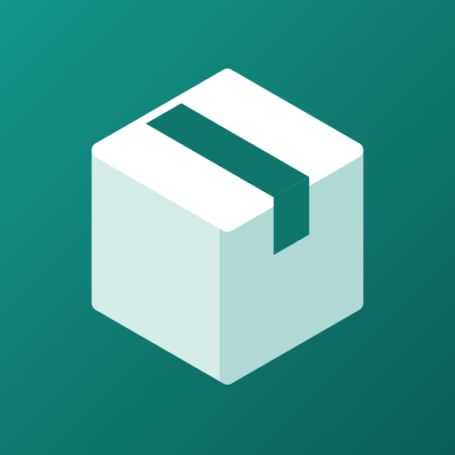

Medical Ocean iPad apps
Install on iPads registered to Medical Ocean LTD · Requires iPadOS 26 or later
Open this page in Safari on the iPad; the install buttons don't work on a computer or in other browsers.
Medical Ocean
Install EHR appNew in 1.0.3: faster consent signing
- The consent form opens with the patient banner on top, the same as the patient chart.
- The responsible health professional is chosen from a dropdown, set to you by default.
- Patient and professional signatures open a large signature box only: no name or role to type.
Also included (1.0.2): shared iPad PIN lock after 5 minutes idle.
- Tap Install EHR app, then tap Install in the prompt.
- Wait for the icon to finish downloading on the Home Screen.
- Sign in with your clinic account (server ehr-new.on-forge.com), then create your 6-digit PIN.
Medical Ocean Check-in
Install Check-in kioskWhat it does
- Patients type their date of birth, tap their booking and press Check in.
- The appointment shows as Arrived in the EHR straight away.
- English and Arabic. Nothing about the patient is kept on the iPad.
- Tap Install Check-in kiosk, then tap Install in the prompt.
- In the EHR, go to Settings → Appointments → Check-in kiosks, add a kiosk for the location and copy its 8-character pairing code.
- Open Check-in on the iPad and enter the code. (Codes expire after 24 hours.)
- Optional: turn on Guided Access (Settings → Accessibility) so patients can't leave the app. Hold the logo for 5 seconds to unpair.

Clinic Inventory
Install Clinic InventoryWhat it does
- Scan items and locations, record stock, custody and daily checks.
- Works offline and syncs when the iPad is back on the network.
- English and Arabic.
- Tap Install Clinic Inventory, then tap Install in the prompt.
- Open the app and enter the server address https://inventory-jibrel.on-forge.com/api/v1 (it must end in /api/v1).
- Sign in with your account, then create your PIN.